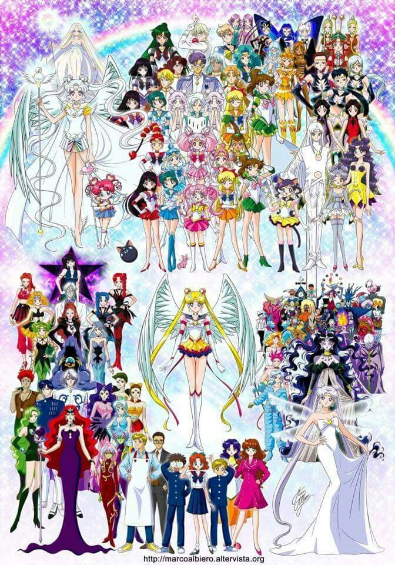

Sailor Moon / Usagi Tsukino / Serena
Starting off the series as a normal 14 year old girl who love to sleep, eat, and play games. She finds out she is also Sailor Moon as well as the princess of the Moon Kingdom. She is a cancer who loves sweets and is an over all is scared of her own shadow. But she make the best of friends you could possibly ask for.
Tuxedo Mask / Mamoru Chiba / Darien
The main romantic interest and Naoko's version of the perfect guy. Someone you can't entirely rely on, but at least he's handsome. Okay, so maybe that's not all there is to Tuxedo Mask. He actually does come when the scouts need help. However he tends to fall into evil hands more often than not and ends up with a few other alias. Aside from being an occasional distraction during a fight, he was also the prince of Earth and it's protector. He and Sailor Moon had a 'Romeo and Juliet' sort of romance before their rebirth.
Sailor Mercury / Ami Mizuno / Amy
The brains! Ami is a strategist and what she lacks in strength she makes up for in smarts. She also loves burger, painting, piano, swimming and chess. Sailor Mercury was the first Sailor Scout Sailor Moon found to help her. Though she isn't particularly strong, Sailor Mercury is seen to have some intense moments with her evil counterparts and can occasionally be seen in funny moments. She hopes to be a doctor one day, but until then, she'll fight evil and help her friends study.
Sailor Mars / Rei Hino / Raye
Rei is perhaps one of the more elegant characters. She has a fiery personality but can always be counted on no matter what. Sailor Mar's lives at a temple with her grandfather. She helps clean and manage the shrine and has a rumor about her about being a princess or being evil. But she is simply a passionate person. In the manga, she prides herself on not needing a man in her life. However in the original anime, she is seen to have several crushes.
Sailor Jupiter / Makoto Kino / Lita
She is the muscle! Makoto is more than just a pretty face that will punch you in the face. She is also a lover of love. She loves to bake and take care of plants! Sailor Jupiter is the fourth scout to be found. As I said, she the muscle. He name references nature as does one of her abilities. But everything else about her is lightening which can be confusing. What's not confusing is her loyalty to her friends and doing what is right no matter the circumstances.
Sailor Venus / Minako Aino / Mina
Minako was a Sailor Scout before the others. Working along side cops to help maintain Justice. Minako is supposed to but Usagi's body double. Minako enjoy Volleyball, sweets, games and love. Sailor Venus has games and comics about her since she was working as a Sailor Scout before any of the others. She stands for love and beauty but she struggles finding love herself. There are theories she is based off of the goddess Ishtar who was the goddess of love and sexuality.
Sailor Uranus / Haruka Tenou / Amara
Sailor Uranus is one of the holders of the three talismans. She is strong physically and mentally. She loves to drive and her power is that of air. Sailor Uranus is exceptionally charming and is one of the gender fluid characters through out the series. There are times you will see other character's thinking Haruka is a male since she sometimes presents herself in that way. And while Sailor Uranus will flirt with many females, her one true love will always be Sailor Neptune.
Sailor Neptune / Michiru Kaioh / Michelle
Sailor Neptune is a very graceful Sailor Scout. She is excellent in painting as well as playing the violin. Her element is of the sea and is another scout who is a holder of a talisman. Sailor Neptune is one of the scouts who can sense evil but also uses her talisman to help guide her in the right direction. She is determined to do what must be done regardless of sacrafices and she and Sailor Uranus have one of the saddest scenes in the animation that can easily bring anyone to tears.
Sailor Pluto / Setsuna Meiou / Trista
Sailor Pluto is the guardian of time. She is seen a bit earlier in the series due to her friendship with Sailor Mini Moon. Sailor Pluto is the third holder of a talisman. Sailor Pluto was never supposed to join the Sailor Scouts. She was supposed to stay and protect the time door. It was a taboo for her to leave and was a taboo to stop time. However she did both for the good of the world. Their are also theories that she and King Endemion (What? Who's that? Go watch or read the series!) have had some romantic relations. Or at the very least a crush. She is also the only character who could be seen as a person of color. But her skin tone is often changing between animes and manga.
Sailor Saturn / Hotaru Tomoe / Hotaru
Sailor Saturn is a complicated character. Her prensence is a sign of destruction because Sailor Saturn only awakens when the world must be destroyed and reborn. Sailor Saturn's body has several identities. Firstly, she is Hotaru and as a baby she nearly died after an explosion in a lab. However her father made a deal with an evil entity that saved her. But her body remained weak and partially mechanical which is only seen once in the orignal anime. While sometimes she is Hotaru, sometimes the evil entity who took claim to her body is the one present. Pharoe 90, Mistress 9 and Sailor Saturn are her other identities. Pharoe 90 and Mistress 9 however were evil, eating the pure hearts of anyone she could to gain strength. Eventually, Sailor Saturn appear to destroy a world that can no longer be saved. But Sailor Moon manages to stop this from occuring and what actually happens is Sailor Saturn is killed and reborn. Sailor Pluto, Neptune, and Uranus choose to take care of her and raise her. She grows fast though, taking the mantle of Sailor Saturn once again.
Sailor Chibi Moon / ChibiUsa Tsukino / Rini
Sailor Chibi Moon is Sailor Moon's daughter from the future. She comes to the present timeline to ask Sailor Moon for help. She is much like her mother but grew up without many friends and this led the character to have her own complicated story. After the first time Sailor Chibi Moon comes, she does eventually return to her orignaly timeline but is again sent back to the current timeline so she can learn to be a Sailor Scout and to make friends. She ends up finding love and though it isn't seen in the anime, she will get her own Sailor Scout Team once they are saved from the cluches of evil.
Sailor Moon has a plethora of characters. There are more Sailor Scouts than listed here. More identities to known characters. More villains that are truely interesting to learn about. There are monsters with fasinating designs and in every rendition of Sailor Moon there is something new and interesting. There characters that exist in the live action that don't any where else. You just have to emerse yourself completely to eventually find them all.
